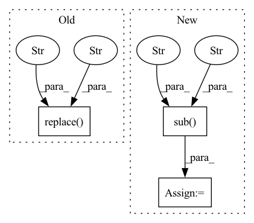

Pattern ID :30494
Before Change
utt = utt.replace("_SIL_", "~")
// phonemize
phones = phonemizer.phonemize(utt, language_switch="remove-flags", backend="espeak", language=self.g2p_lang, preserve_punctuation=True, strip=True,
punctuation_marks=":,.!?¡¿—…"«»“”~", with_stress=self.use_stress).replace(";", ",").replace(":", ",").replace(""",
",").replace(
"--", ",").replace("-", ",").replace("\n", " ").replace("\t", " ").replace("¡", "!").replace("¿", "?").replace(",", "~").replace("~~" , "~" )
if not self.use_prosody:
// retain ~ as heuristic pause marker, even though all other symbols are removed with this option.
// also retain . ? and ! since they can be indicators for the stop tokenAfter Change
with_stress=self.use_stress).replace(";", ",") \
.replace(":", ",").replace(""", ",").replace("-", ",").replace("-", ",").replace("\n", " ") \
.replace("\t", " ").replace("¡", "").replace("¿", "").replace(",", "~")
phones = re.sub("~+" , "~" , phones)
if not self.use_prosody:
// retain ~ as heuristic pause marker, even though all other symbols are removed with this option.
// also retain . ? and ! since they can be indicators for the stop token
phones = phones.replace("ˌ", "").replace("ː", "").replace("ˑ", "").replace("˘", "").replace("|", "").replace("‖", "")
if not self.use_word_boundaries:
phones = phones.replace(" ", "")
else:
phones = re.sub(r"\s+", " ", phones)
if view:
print("Phonemes: \n{}\n".format(phones))In pattern: SUPERPATTERN
Frequency: 4
Non-data size: 3
Instances Fragment ID: 90242848
Project Name: digitalphonetics/ims-toucan
Commit Name: 1d2c58a87347747b3cb79b01a21483c9a91f376f
Time: 2021-04-21
Author: florian.lux@ims.uni-stuttgart.de
File Name: PreprocessingForTTS/ProcessText.py
M Class Name: TextFrontend
N Class Name: TextFrontend
M Method Name: string_to_tensor(3)
N Method Name: string_to_tensor(3)
M Parent Class:
N Parent Class:
M File Name: PreprocessingForTTS/ProcessText.py
N File Name: PreprocessingForTTS/ProcessText.py
M Start Line: 82
M End Line: 85
N Start Line: 91
N End Line: 111
Before Change
def merge_repeated(self, text):
import re
r = re.sub(r"(.+)( \1)+", r"\1", text).replace(" _" , "" ) .replace("_ ", "")
if r == "_": r = ""
return r
After Change
def merge_repeated(self, text):
import re
text = re.sub(r"(.)\1+", r"\1", text)
text = re.sub(r" +" , r" " , text)
if text == " ": text = ""
return text
Fragment ID: 90242790
Project Name: kaiidams/voice100
Commit Name: 5948424c99deeb7b562afb7eee83aea08887d642
Time: 2021-06-08
Author: katsuya.iida@gmail.com
File Name: voice100/encoder.py
M Class Name: CharEncoder
N Class Name: CharEncoder
M Method Name: merge_repeated(2)
N Method Name: merge_repeated(2)
M Parent Class:
N Parent Class:
M File Name: voice100/encoder.py
N File Name: voice100/encoder.py
M Start Line: 67
M End Line: 69
N Start Line: 67
N End Line: 70
Before Change
"and the pipeline will be run immediately."
)
orchestrator_run_name = get_orchestrator_run_name(
pipeline_name=deployment.pipeline_configuration.name
).replace("_" , "-" )
session = sagemaker.Session(default_bucket=self.config.bucket)
sagemaker_steps = []After Change
pipeline_name=deployment.pipeline_configuration.name
)
// replace all non-alphanum and non-hyphens with hyphens
orchestrator_run_name = re.sub(
r"[^a-zA-Z0-9\-]" , "-" , unsanitized_orchestrator_run_name
)
session = sagemaker.Session(default_bucket=self.config.bucket)
sagemaker_steps = [] Fragment ID: 90242843
Project Name: maiot-io/zenml
Commit Name: d8e1d1c6d22b22ecd0337d68c128c1fdfc5010e6
Time: 2023-04-26
Author: strickvl@users.noreply.github.com
File Name: src/zenml/integrations/aws/orchestrators/sagemaker_orchestrator.py
M Class Name: SagemakerOrchestrator
N Class Name: SagemakerOrchestrator
M Method Name: prepare_or_run_pipeline(4)
N Method Name: prepare_or_run_pipeline(4)
M Parent Class: ContainerizedOrchestrator
N Parent Class: ContainerizedOrchestrator
M File Name: src/zenml/integrations/aws/orchestrators/sagemaker_orchestrator.py
N File Name: src/zenml/integrations/aws/orchestrators/sagemaker_orchestrator.py
M Start Line: 154
M End Line: 156
N Start Line: 156
N End Line: 162
Before Change
temp_file = output_file + ".tmp"
with open(temp_file, "w") as fout:
fout.write(open(output_file).read().replace("\r" , " " ) ) // delete \r
//print(os.path.abspath(__file__))
cmd = r"cat %s | node %s %s > %s " % (temp_file, os.path.join(os.path.dirname(__file__), "preprocess_latex.js"), parameters.mode, output_file)After Change
prepre = open(output_file, "r").read().replace("\r", " ") // delete \r
// replace split, align with aligned
prepre = re.sub(r"\\begin{(split|align|alignedat|alignat|eqnarray)\*?}(.+?)\\end{\1\*?}", r"\\begin{aligned}\2\\end{aligned}", prepre, flags=re.S)
prepre = re.sub(r"\\begin{(smallmatrix)\*?}(.+?)\\end{\1\*?}" , r"\\begin{matrix}\2\\end{matrix}" , prepre, flags=re.S)
fout.write(prepre)
// print(os.path.abspath(__file__))
cmd = r"cat %s | node %s %s > %s " % (temp_file, os.path.join(os.path.dirname(__file__), "preprocess_latex.js"), parameters.mode, output_file) Fragment ID: 90242796
Project Name: lukas-blecher/latex-ocr
Commit Name: 97df469003d35553b53b408fe18d7ce676eb136c
Time: 2021-02-18
Author: luk.blecher@gmx.de
File Name: dataset/preprocessing/preprocess_formulas.py
M Class Name: AnonimousClass
N Class Name: AnonimousClass
M Method Name: main(1)
N Method Name: main(1)
M Parent Class:
N Parent Class:
M File Name: dataset/preprocessing/preprocess_formulas.py
N File Name: dataset/preprocessing/preprocess_formulas.py
M Start Line: 52
M End Line: 76
N Start Line: 53
N End Line: 89